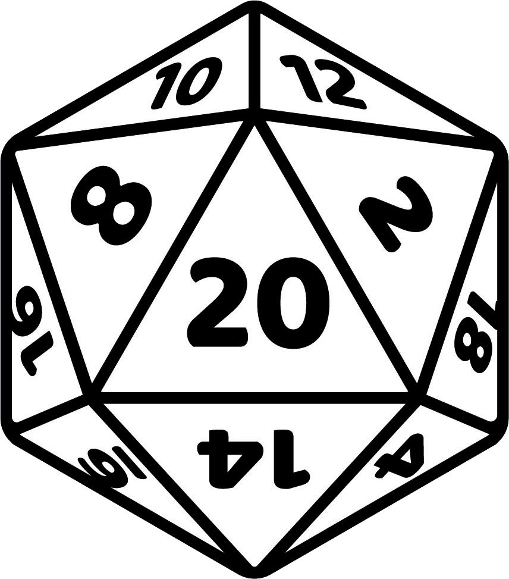
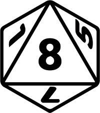
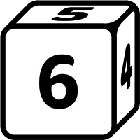
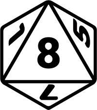
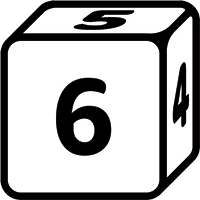

9kingdoms RPG
 



 There is no "d10"...Logan strikes again.
There is no "d10"...Logan strikes again.
Act I
Boar City
The city of Boar is no laughing matter, being home to King Thaenor, a demon slaying king who once rid the land of a major demon threat. The town boasts not only the best security in the kingdom, but it is also home to the sacred relic "the veil of light a holy chalice said to emposer anyone who drinks from its cup of moonlight, the power to control the moon and its children. It is kept in the great cathdral of "Soar" The Mystical Bird/Eagle who sees all evil deeds.